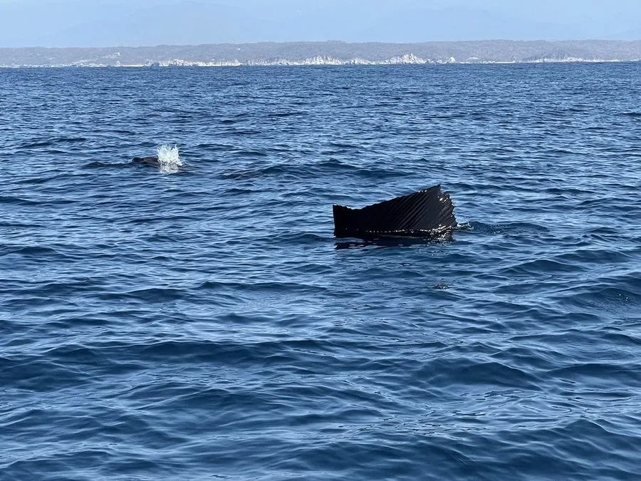

鱼类 · 动物界
旗鱼 Istiophorus platypterus

背鳍高大如帆的远洋鱼类，被公认为游速最快的鱼类之一，常用长吻击打鱼群，分布于全球热带和亚热带海域。
- 分类
- 门脊索动物门纲硬骨鱼纲目鲈形目科旗鱼科属旗鱼属
- 栖息环境
- 全球热带和亚热带大洋的上层水体，常随水温变化进行长距离洄游
- 地理分布
- 太平洋、大西洋和印度洋的热带、亚热带及暖温带海域
- 保护级别
- IUCN 无危（LC）；中国未列入国家重点保护野生动物名录
物种志
旗鱼体呈流线型，上颌延长成细长的吻部。第一背鳍特别高大，展开时像一面帆，因此又被称为“帆鱼”或“雨伞鱼”。体色背部深蓝，腹部银白，体侧有淡色的竖纹。成鱼体长一般 2–3 m，体重 30–100 kg，最大可超过 3 m、体重 100 kg 以上。
旗鱼分布于全球热带、亚热带和暖温带海洋，包括太平洋、大西洋和印度洋。它是高度洄游的鱼类，常单独或结成小群活动。旗鱼是肉食性动物，捕食小鱼和乌贼，捕猎时会展开背鳍把鱼群围拢，再用细长的吻部击打猎物。繁殖期在温暖海域，雌鱼可产数百万粒卵。它那面帆状的背鳍在高速冲刺时会折叠收起，以减少水流阻力，这是对快速游动的适应。旗鱼是著名的游钓鱼类，也是部分地区的食用鱼；由于分布广、种群数量尚可，IUCN 将其评为无危。中国未将其列入国家重点保护野生动物名录。
形态与习性
- 食性捕食小鱼和乌贼，用长吻击打鱼群
- 体长一般 2–3 m，最大可超过 3 m
- 体重常见 30–100 kg
- 背鳍第一背鳍高大如帆，冲刺时可折叠收起减少阻力
- 繁殖在温暖海域产卵，雌鱼可产数百万粒卵
- 习性高度洄游，常单独或结成小群活动
趣味知识
- 旗鱼的第一背鳍高大如帆，游动时展开，冲刺时会折叠收起以减少阻力。
- 它用细长的吻部击打鱼群，把猎物打晕后再吞食。
- 旗鱼被公认为海洋中游速最快的鱼类之一。